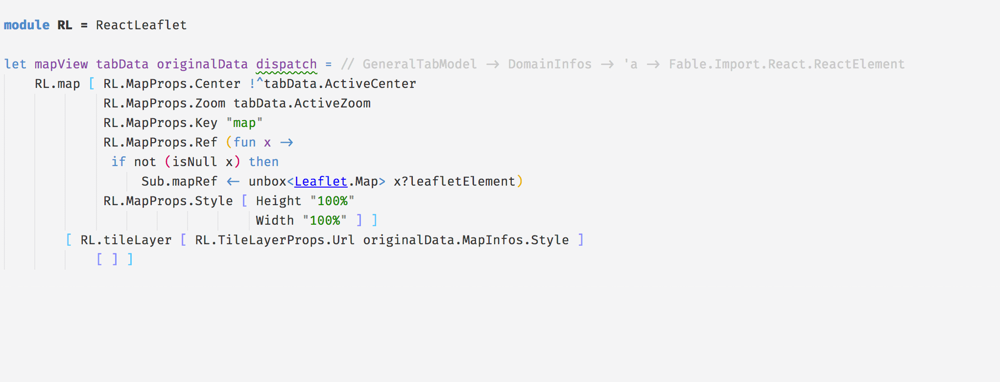

## Elmish #### get your dev stack back under control Maxime Mangel - [@MangelMaxime](https://twitter.com/MangelMaxime)
- Elmish - Tooling - Elmish ecosystem - Html to Elmish - What's coming next ?
## Elmish
Model - View - Update
## Model - View - Update ### Model ```fs type Model = { Value : int } type Msg = | Decrement | Increment let init () = { Value = 0 } ```
## Model - View - Update ### View ```fsharp let view model dispatch = div [ ] [ button [ OnClick (fun _ -> dispatch Decrement) ] [ str "-" ] div [ ] [ str (string model.Value) ] button [ OnClick (fun _ -> dispatch Increment) ] [ str "+" ] ] ```
## Model - View - Update ### Update ```fsharp let update msg model = match msg with | Increment -> { model with Value = model.Value + 1 } | Decrement -> { model with Value = model.Value - 1 } ```
## Model - View - Update ### Linking everything ```fsharp Program.mkSimple init update view |> Program.withReact "elmish-app" |> Program.run ```
## Model - View - Update ### Demo
## Nested components ### Model ```fs type Model = { Counters : Counter.Model list } type Msg = | Add | Remove | Modify of int * Counter.Msg let init () = { Counters = [] } ```
## Nested components ### View ```fs let view model dispatch = let counterDispatch i msg = dispatch (Modify (i, msg)) let counters = model.Counters |> List.mapi (fun i c -> Counter.view c (counterDispatch i)) div [ ] [ yield button [ OnClick (fun _ -> dispatch Remove) ] [ str "Remove" ] yield button [ OnClick (fun _ -> dispatch Add) ] [ str "Add" ] yield! counters ] ```
## Nested components ### Update ```fs let update msg model = match msg with | Add -> { Counters = Counter.init () :: model.Counters } | Remove -> { Counters = match model.Counters with | [] -> [] | _ :: tail -> tail } | Modify (counterIndex, counterMsg) -> { model with Counters = model.Counters |> List.mapi (fun localIndex counterModel -> if localIndex = counterIndex then Counter.update counterMsg counterModel else counterModel ) } ```
<img data-src="ressources/basic_counter_list.gif">
## Tooling
## Tooling - Editors - Ionide - Visual Studio - Intellisense - Compiler
## Elmish.Debugger ```diff Program.mkSimple init update view |> Program.withReactUnoptimized "elmish-app" + |> Program.withDebugger |> Program.run ```
## Elmish.Debugger
## Elmish.HMR ```diff Program.mkSimple init update view + |> Program.withHMR |> Program.withReact "elmish-app" |> Program.run ```
## Elmish.HMR
## Elmish ecosystem
## Manual css with Bulma ```fs let view model dispatch = div [ Class "columns is-vcentered" Style [ Width "300px" ] ] [ div [ Class "column" ] [ button [ Class "button" OnClick (fun _ -> dispatch Decrement) ] [ str "-" ] ] div [ Class "column" ] [ str (string model.Value) ] div [ Class "column" ] [ button [ Class "button" OnClick (fun _ -> dispatch Increment) ] [ str "+" ] ] ] ```
## Strongly typed css wtih Fulma ```fs let view model dispatch = Columns.columns [ Columns.Props [ Style [ Width "300px" ] ] Column.IsVcentered ] [ Column.column [ ] [ Button.button [ Button.OnClick (fun _ -> dispatch Decrement) ] [ str "-" ] ] Column.column [ ] [ str (string model.Value) ] Column.column [ ] [ Button.button [ Button.OnClick (fun _ -> dispatch Increment) ] [ str "+" ] ] ] ```
## Styled counter ### Demo
## React
## React 
## React <img data-src="ressources/react-leaflet-demo-map.gif">
### Thot.Json.Encode
### Thot.Json.Decode <br/> - No need to follow the json structure - Decode only what's needed - Strongly typed - Easily extensible - Nice error message
### Thot.Json.Decode
### Thot.Json.Decode ```json { "firstname" : "Maxime", "surname" : "Mangel", "age": "16", "address" : { "street" : "Main street", "city": "Bordeaux" } } Expecting an int but instead got: "16" ```
### Thot.Json.Decode ```json { "firstname" : "Maxime", "surname" : "Mangel", "age": 16, "address" : { "city": "Bordeaux" } } Expecting an object with a field named `street` but instead got: { "city": "Bordeaux" } ```
#### Thot.Json generator (WIP) <img height="550" data-src="ressources/thot-generator-demo.gif">
## Html to Elmish
## Look at these projects too - [SAFE stack](https://github.com/SAFE-Stack) - [Fulma demo](https://mangelmaxime.github.io/fulma-demo/) - [Fable.Remoting](https://zaid-ajaj.github.io/Fable.Remoting/) - [Elmish.Toastr](https://zaid-ajaj.github.io/Elmish.Toastr/)
## What's coming ? - Html to Elmish - Fulma - Ionide integration - React bindings generator - Thot.Json generator tool
## Thank you! - [https://ionide.io](https://ionide.io) - [http://fable.io/](http://fable.io/) - [https://fable-elmish.github.io/](https://fable-elmish.github.io/) - [https://mangelmaxime.github.io/Fulma/](https://mangelmaxime.github.io/Fulma/) - [https://github.com/fable-compiler/fable-react](https://github.com/fable-compiler/fable-react)